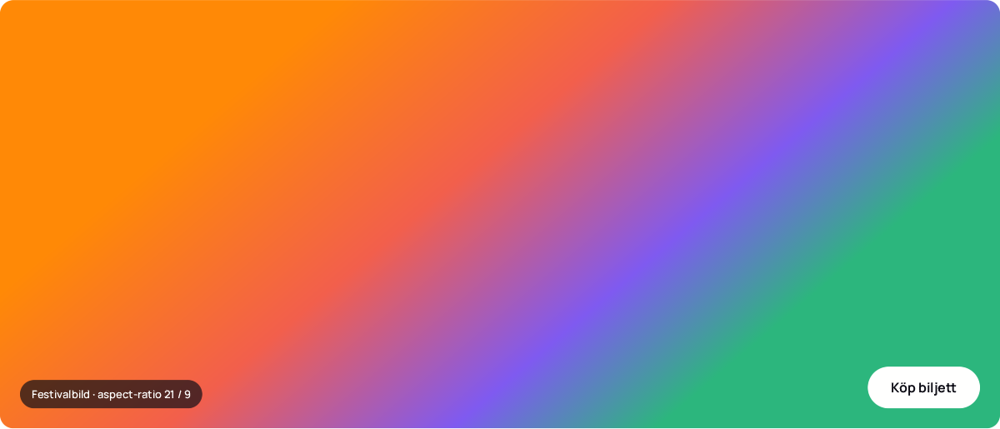
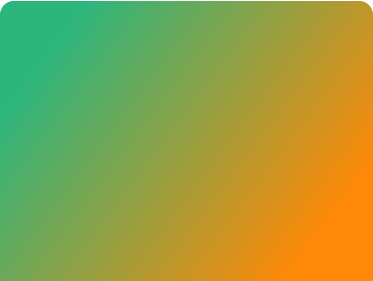

Norrsken Collective
· Stora Scenen
Elektronisk pop med levande stråkar. Kollektivet avslutar festivalen med en exklusiv show där ljus, projektioner och en 20-hövdad kör tar över Boulognerskogen i 90 minuter.
– · Gävle – · Boulognerskogen, Gävle
Två dagar, tolv akter och en stadspark full av musik. Pop, indie och elektroniskt under bar himmel mitt i Gävle.

· Stora Scenen
Elektronisk pop med levande stråkar. Kollektivet avslutar festivalen med en exklusiv show där ljus, projektioner och en 20-hövdad kör tar över Boulognerskogen i 90 minuter.

Indierock med havsutsikt och refränger att sjunga med i.
Tolv blåsare, en trumslagare och ett energiskt funkset.
Stämningsfull singer-songwriter från Sandviken med ny skiva i bagaget.
Folkmusik i ny tappning med nyckelharpa och elektronik.
Synthpop-duo som blandar 80-tal med nordisk melankoli.
Festivalens huvudakt. Elektronisk pop med stråkar och kör.
Boulognerskogen, Gävle. Entré via Södra Kungsgatan
och . Grindarna öppnar .
Dagbiljett 595 kr, helgpass 995 kr. Köp på gavlemusicfestival.se/biljetter
Tio minuter promenad från Gävle C. Extra bussar på linje 1 och 11.
Ett tiotal foodtrucks med vegetariska och glutenfria alternativ.
Plattformar vid båda scenerna, tillgängliga toaletter och hörslinga.